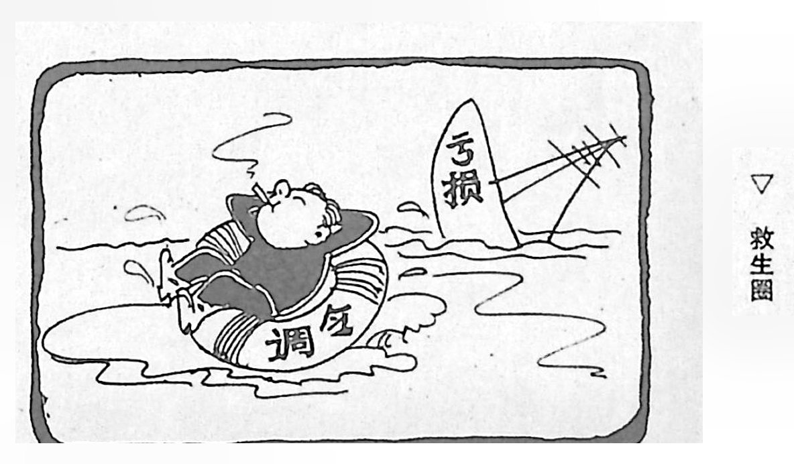

王小根 《人事》1988年第1期（总第28期），封三
救生圈
Life Buoy
- Text in the drawing
- 亏损 / 调□
Losses / Transfer[?] - Description
- Behind him a boat labeled “losses” is going down, but the fat cadre floats away in a lifebuoy, puffing on a cigarette. The buoy is labeled with the character for “transfer” and a second character that is hard to read.
- Note
- Managers of loss-making enterprises were commonly transferred (调) to another post rather than held responsible; the second character on the buoy is unclear in the scan.
- Artist
- Wang Xiaogen 王小根
- Published in
- 《人事》1988年第1期（总第28期）, inside back cover
- Themes
- Passing the buck · Reform and its implementation

Cite
Wang Xiaogen, “救生圈” [Life Buoy], Renshi (Personnel) 《人事》, 1988, no. 1, inside back cover.